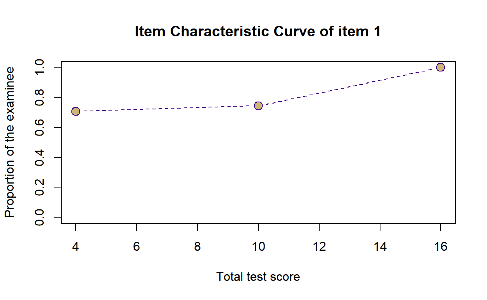
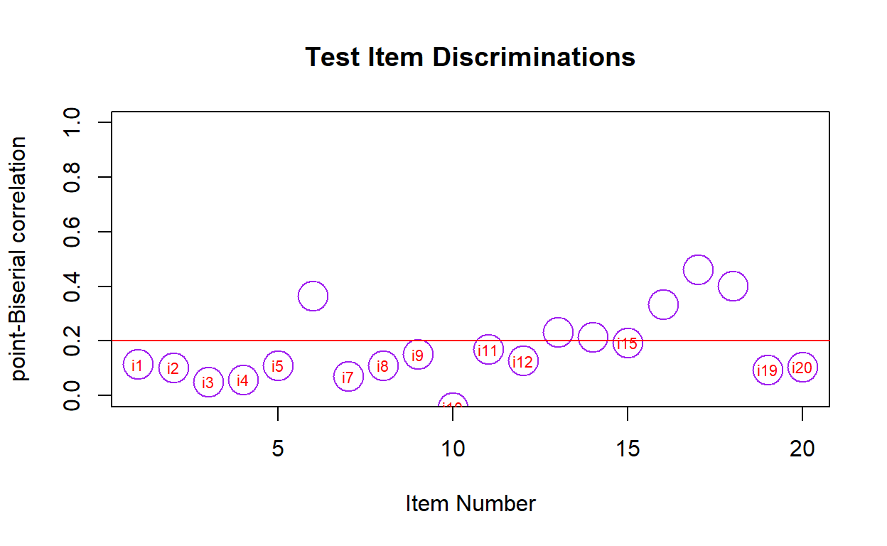
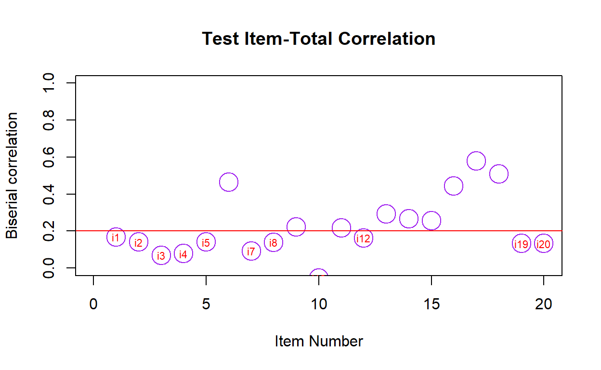

For this post, I will be analyzing characteristics of test items based on the framework of Classical Test Theory (CTT).
(13 min read)
Classical Test Theory (CTT - also known as weak theory or true-score theory) is a psychometric framework that analyzes psychological tests based on the three concepts of True score (T), Observed score (X), and Error score (E) (Fan, 1998).
CTT assumes that each person has a true score that could be obtained if there were no errors in measurement. This approach to psychometric employs simple mathematical estimates such as averages, proportions, and correlation as methods to measure test takers’ level of construct regardless of their individual attribute.
The major advantage of CTT are its relatively weak theoretical assumptions, which make it easy to apply in many testing situations such as classroom assessment without much constraints. Relatively weak theoretical assumptions not only characterize CTT but also its extensions (e.g., generalizability theory) as well.
knitr::opts_chunk$set(error = TRUE)
The dataset we will use for this task is an assessment dataset for 241 students N = (241). The assessment comprises of 20 multiple-choice exam items. Each item has 4 response options.
We will begin by loading in the unscored answer data as seen below. i001 represents item 1, i002 represents item 2 and so forth until item 20.
| i001 | i002 | i003 | i004 | i005 | i006 | i007 | i008 | i009 | i010 | i011 | i012 | i013 | i014 | i015 | i016 | i017 | i018 | i019 | i020 |
|---|---|---|---|---|---|---|---|---|---|---|---|---|---|---|---|---|---|---|---|
| A | C | D | D | A | B | C | A | B | A | A | B | D | C | B | A | C | D | C | D |
| B | C | B | D | C | C | A | A | B | D | A | C | D | B | B | B | A | A | C | D |
| A | C | B | D | B | A | A | C | B | D | C | A | D | A | C | B | A | C | C | B |
| A | C | B | D | B | A | A | A | B | D | A | D | B | D | C | D | A | A | C | C |
| A | C | D | D | A | B | B | A | B | A | C | A | D | A | C | A | C | D | C | C |
| A | C | B | D | C | B | C | C | B | A | C | B | D | A | C | A | C | B | C | D |
i001 is A, the key has to be “A”, not “a” or “B” or other responses.| i001 | i002 | i003 | i004 | i005 | i006 | i007 | i008 | i009 | i010 | i011 | i012 | i013 | i014 | i015 | i016 | i017 | i018 | i019 | i020 |
|---|---|---|---|---|---|---|---|---|---|---|---|---|---|---|---|---|---|---|---|
| A | C | C | D | B | B | A | C | B | D | C | A | D | A | C | A | C | D | D | C |
We will then use the function score() function to score multiple choice responses by specifying our unscored response and answer key dataframe. What makes this function useful is that we can also request for reliability analysis with rel = TRUE.
When scored, each item will be binarily coded, with 0 as incorrect and 1 as correct. We can also requested for item parameter such as mean of that item (itemMean), point-biserial and biserial correlation (we will get there soon), Coefficient Alpha reliability (or Cronbach’s Alpha) if that item is removed from the exam, and we can even requested for the function to flag if that item has low reliability value.
#scoring
myScore <- score(data, key, output.scored=TRUE, rel = TRUE)
scored_item <- myScore$scored %>% as.data.frame()
kbl(head(scored_item)) %>%
kable_styling(bootstrap_options = c("striped", "hover", "condensed", "responsive"),
full_width = TRUE, position = "left")
| V1 | V2 | V3 | V4 | V5 | V6 | V7 | V8 | V9 | V10 | V11 | V12 | V13 | V14 | V15 | V16 | V17 | V18 | V19 | V20 |
|---|---|---|---|---|---|---|---|---|---|---|---|---|---|---|---|---|---|---|---|
| 1 | 1 | 0 | 1 | 0 | 1 | 0 | 0 | 1 | 0 | 0 | 0 | 1 | 0 | 0 | 1 | 1 | 1 | 0 | 0 |
| 0 | 1 | 0 | 1 | 0 | 0 | 1 | 0 | 1 | 1 | 0 | 0 | 1 | 0 | 0 | 0 | 0 | 0 | 0 | 0 |
| 1 | 1 | 0 | 1 | 1 | 0 | 1 | 1 | 1 | 1 | 1 | 1 | 1 | 1 | 1 | 0 | 0 | 0 | 0 | 0 |
| 1 | 1 | 0 | 1 | 1 | 0 | 1 | 0 | 1 | 1 | 0 | 0 | 0 | 0 | 1 | 0 | 0 | 0 | 0 | 1 |
| 1 | 1 | 0 | 1 | 0 | 1 | 0 | 0 | 1 | 0 | 1 | 1 | 1 | 1 | 1 | 1 | 1 | 1 | 0 | 1 |
| 1 | 1 | 0 | 1 | 0 | 1 | 0 | 1 | 1 | 0 | 1 | 0 | 1 | 1 | 1 | 1 | 1 | 0 | 0 | 0 |
item_parameter <- itemAnalysis(scored_item, itemReport=TRUE, NA.Delete=TRUE, pBisFlag = T, bisFlag = T, flagStyle = c("X",""))
str(item_parameter)
List of 6
$ nItem : int 20
$ nPerson : int 241
$ alpha : num 0.54
$ scaleMean : num 9.44
$ scaleSD : num 3
$ itemReport:'data.frame': 20 obs. of 7 variables:
..$ itemName : chr [1:20] "V1" "V2" "V3" "V4" ...
..$ itemMean : num [1:20] 0.759 0.734 0.257 0.68 0.365 ...
..$ pBis : num [1:20] 0.1148 0.1036 0.0506 0.0591 0.1111 ...
..$ bis : num [1:20] 0.1576 0.1395 0.0686 0.0771 0.1423 ...
..$ alphaIfDeleted: num [1:20] 0.535 0.537 0.545 0.545 0.537 ...
..$ lowPBis : chr [1:20] "X" "X" "X" "X" ...
..$ lowBis : chr [1:20] "X" "X" "X" "X" ...
- attr(*, "class")= chr "itemAnalysis"psych::describe() on to learn how students of this section perform on this test with mean, median, mode, standard deviation, and so forth.kbl(head(myScore$score)) %>%
kable_styling(bootstrap_options = c("striped", "hover", "condensed", "responsive"),
full_width = TRUE, position = "left")
| x | |
|---|---|
| P1 | 9 |
| P2 | 6 |
| P3 | 13 |
| P4 | 9 |
| P5 | 14 |
| P6 | 12 |
describe(myScore$score)
vars n mean sd median trimmed mad min max range skew kurtosis
X1 1 241 9.44 3 9 9.34 2.97 1 19 18 0.26 -0.14
se
X1 0.19#Score transformation
IQ <- score.transform(myScore$score, mu.new = 100, sd.new = 15, normalize = TRUE)
#new.scores is the transformed score
kbl(head(IQ$new.scores)) %>%
kable_styling(bootstrap_options = c("striped", "hover", "condensed", "responsive"),
full_width = FALSE, position = "left")
| x | |
|---|---|
| P1 | 99.29768 |
| P2 | 82.70691 |
| P3 | 116.70018 |
| P4 | 99.29768 |
| P5 | 121.19395 |
| P6 | 112.44734 |
#p.scores is the percentile rank of every examinee
kbl(head(IQ$p.scores)) %>%
kable_styling(bootstrap_options = c("striped", "hover", "condensed", "responsive"),
full_width = FALSE, position = "left")
| x | |
|---|---|
| P1 | 0.4813278 |
| P2 | 0.1244813 |
| P3 | 0.8672199 |
| P4 | 0.4813278 |
| P5 | 0.9211618 |
| P6 | 0.7966805 |
cttICC(score = myScore$score, itemVector = myScore$scored[,1],
xlab = "Total test score",
ylab = "Proportion of the examinee",
plotTitle = "Item Characteristic Curve of item 1",
colTheme="dukes", cex=1.5)

#extract responses only as a matrix
responses <- as.matrix(myScore$scored)
psych::alpha(myScore$scored, check.keys = T)
Reliability analysis
Call: psych::alpha(x = myScore$scored, check.keys = T)
raw_alpha std.alpha G6(smc) average_r S/N ase mean sd median_r
0.55 0.55 0.58 0.057 1.2 0.041 0.48 0.15 0.045
lower alpha upper 95% confidence boundaries
0.47 0.55 0.63
Reliability if an item is dropped:
raw_alpha std.alpha G6(smc) average_r S/N alpha se var.r med.r
V1 0.55 0.54 0.58 0.059 1.18 0.042 0.0081 0.045
V2 0.56 0.55 0.58 0.060 1.21 0.041 0.0079 0.048
V3 0.56 0.55 0.59 0.060 1.22 0.041 0.0080 0.048
V4 0.56 0.56 0.59 0.062 1.25 0.040 0.0080 0.052
V5 0.55 0.54 0.58 0.059 1.20 0.041 0.0081 0.048
V6 0.51 0.50 0.54 0.050 1.00 0.046 0.0071 0.041
V7 0.56 0.55 0.59 0.062 1.25 0.040 0.0078 0.051
V8 0.55 0.54 0.58 0.059 1.19 0.041 0.0080 0.048
V9 0.55 0.54 0.58 0.058 1.17 0.042 0.0080 0.048
V10- 0.56 0.56 0.59 0.062 1.25 0.040 0.0079 0.052
V11 0.54 0.54 0.57 0.057 1.15 0.042 0.0081 0.045
V12 0.55 0.54 0.58 0.058 1.17 0.042 0.0080 0.044
V13 0.53 0.52 0.56 0.055 1.10 0.043 0.0074 0.044
V14 0.53 0.52 0.56 0.055 1.10 0.043 0.0076 0.043
V15 0.54 0.53 0.57 0.057 1.14 0.042 0.0076 0.044
V16 0.51 0.51 0.55 0.051 1.03 0.045 0.0068 0.044
V17 0.49 0.48 0.52 0.047 0.93 0.048 0.0056 0.039
V18 0.51 0.50 0.53 0.050 1.00 0.046 0.0060 0.044
V19 0.55 0.54 0.58 0.059 1.19 0.042 0.0079 0.045
V20 0.55 0.55 0.58 0.060 1.20 0.041 0.0077 0.048
Item statistics
n raw.r std.r r.cor r.drop mean sd
V1 241 0.26 0.28 0.181 0.125 0.76 0.43
V2 241 0.23 0.24 0.127 0.083 0.73 0.44
V3 241 0.22 0.23 0.115 0.082 0.26 0.44
V4 241 0.20 0.20 0.066 0.043 0.68 0.47
V5 241 0.26 0.26 0.152 0.106 0.37 0.48
V6 241 0.51 0.50 0.497 0.370 0.54 0.50
V7 241 0.19 0.20 0.074 0.045 0.28 0.45
V8 241 0.27 0.27 0.163 0.113 0.48 0.50
V9 241 0.26 0.29 0.199 0.143 0.83 0.38
V10- 241 0.21 0.20 0.067 0.043 0.56 0.50
V11 241 0.32 0.32 0.228 0.169 0.34 0.47
V12 241 0.31 0.30 0.205 0.148 0.56 0.50
V13 241 0.39 0.38 0.323 0.240 0.39 0.49
V14 241 0.40 0.38 0.327 0.247 0.45 0.50
V15 241 0.33 0.33 0.254 0.183 0.31 0.46
V16 241 0.47 0.47 0.452 0.337 0.64 0.48
V17 241 0.60 0.59 0.647 0.478 0.44 0.50
V18 241 0.52 0.50 0.526 0.387 0.33 0.47
V19 241 0.25 0.27 0.176 0.123 0.19 0.39
V20 241 0.26 0.25 0.152 0.097 0.44 0.50
Non missing response frequency for each item
0 1 miss
[1,] 0.24 0.76 0
[2,] 0.27 0.73 0
[3,] 0.74 0.26 0
[4,] 0.32 0.68 0
[5,] 0.63 0.37 0
[6,] 0.46 0.54 0
[7,] 0.72 0.28 0
[8,] 0.52 0.48 0
[9,] 0.17 0.83 0
[10,] 0.56 0.44 0
[11,] 0.66 0.34 0
[12,] 0.44 0.56 0
[13,] 0.61 0.39 0
[14,] 0.55 0.45 0
[15,] 0.69 0.31 0
[16,] 0.36 0.64 0
[17,] 0.56 0.44 0
[18,] 0.67 0.33 0
[19,] 0.81 0.19 0
[20,] 0.56 0.44 0[1] 0.541653[1] 0.4700428psych::splitHalf(scored_item, raw = TRUE, check.keys = TRUE)
Split half reliabilities
Call: psych::splitHalf(r = scored_item, raw = TRUE, check.keys = TRUE)
Maximum split half reliability (lambda 4) = 0.69
Guttman lambda 6 = 0.58
Average split half reliability = 0.55
Guttman lambda 3 (alpha) = 0.55
Guttman lambda 2 = 0.57
Minimum split half reliability (beta) = 0.31
Average interitem r = 0.06 with median = 0.04
2.5% 50% 97.5%
Quantiles of split half reliability = 0.44 0.55 0.63#With a written function
cronbachs.alpha <-
function(X)
{
X <- data.matrix(X)
n <- ncol(X) # Number of items
k <- nrow(X) # Number of examinees
# Cronbachs alpha
alpha <- (n/(n - 1))*(1 - sum(apply(X, 2, var))/var(rowSums(X)))
return(list("Crombach's alpha" = alpha,
"Number of items" = n,
"Number of examinees" = k))
}
#Dump "cronbach.alpha" function for further use
dump("cronbachs.alpha", file = "cronbachs.alpha.R")
The Spearman-Brown prophecy formula is a formula that predicts reliability of the test through the modification of test length. This formula is one way can use to answer questions such as “how short can I make my assessment?” or “how many items should I write for my test to have adequate reliability?”
Reliability of a test usually decreases when we shorten the test length and increases when we add more test items as well. However, there is no magic number of how long a test should be, so one should consider their context such as nature of the test content, ability of the examinee, and average time for a student to complete the assessment.
SpearmanBrown <-
function(x, n1, n2)
{
source("cronbachs.alpha.R")
x <- as.matrix(x)
N <- n2/n1
# cronbach's alpha for the original test
alpha <- cronbachs.alpha(x)[[1]]
predicted.alpha <- N * alpha / (1 + (N - 1) * alpha)
return(list(original.reliability = alpha,
original.sample.size = n1,
predicted.reliability = predicted.alpha,
predicted.sample.size = n2))
}
# predict reliability by Spearman-Brown formula
# if the number of items is reduced from 25 to 15
SpearmanBrown(responses, n1 = 20, n2 = 15)
$original.reliability
[1] 0.5395239
$original.sample.size
[1] 20
$predicted.reliability
[1] 0.4677309
$predicted.sample.size
[1] 15# predict reliability by Spearman-Brown formula
# if the number of items is increased from 25 to 35
SpearmanBrown(responses, n1 = 20, n2 = 35)
$original.reliability
[1] 0.5395239
$original.sample.size
[1] 20
$predicted.reliability
[1] 0.6721757
$predicted.sample.size
[1] 35# predict reliability by Spearman-Brown formula
# if the number of items is doubled
SpearmanBrown(responses, n1 = 20, n2 = 40)
$original.reliability
[1] 0.5395239
$original.sample.size
[1] 20
$predicted.reliability
[1] 0.7008971
$predicted.sample.size
[1] 40psych::guttman(responses)
Call: psych::guttman(r = responses)
Alternative estimates of reliability
Guttman bounds
L1 = 0.51
L2 = 0.56
L3 (alpha) = 0.53
L4 (max) = 0.69
L5 = 0.55
L6 (smc) = 0.57
TenBerge bounds
mu0 = 0.53 mu1 = 0.56 mu2 = 0.56 mu3 = 0.56
alpha of first PC = 0.64
estimated greatest lower bound based upon communalities= 0.69
beta found by splitHalf = 0.32 #Split data (variables-item) into two equally and randomly.
split.items <-
function(X, seed = NULL)
{
# optional fixed seed
if (!is.null(seed)) {set.seed(seed)}
X <- as.matrix(X)
# if n = 2x, then lengths Y1 = Y2
# if n = 2x+1, then lenths Y1 = Y2+1
n <- ncol(X)
index <- sample(1:n, ceiling(n/2))
Y1 <- X[, index ]
Y2 <- X[, -index]
return(list(Y1, Y2))
}
dump("split.items", file = "split.items.R")
pearson <-
function(X, seed = NULL, n = NULL)
{
source("split.items.R")
# optional fixed seed
if (!is.null(seed)) {set.seed(seed)}
# the number of bootstrap replicates. 1e3 = 1000
if (is.null(n)) {n <- 1e3}
X <- as.matrix(X)
r <- rep(NA, n)
for (i in 1:n) {
# split items
Y <- split.items(X)
# total scores
S1 <- as.matrix(rowSums(Y[[1]]))
S2 <- as.matrix(rowSums(Y[[2]]))
# residual scores
R1 <- S1 - mean(S1)
R2 <- S2 - mean(S2)
# Pearson product-moment correlation coefficient
r[i] <- (t(R1) %*% R2) / (sqrt((t(R1) %*% R1)) * sqrt((t(R2) %*% R2)))
}
return(mean(r))
}
# compute the Pearson product-moment correlation coefficient
pearson(responses, seed = 456, n = 1)
[1] 0.3499066 [,1]
[1,] 0.3499066[1] 2.036401 lower_bound observed upper_bound
[1,] 5.65 9 12.35
[2,] 2.65 6 9.35
[3,] 9.65 13 16.35
[4,] 5.65 9 12.35
[5,] 10.65 14 17.35
[6,] 8.65 12 15.35
[7,] 3.65 7 10.35
[8,] 5.65 9 12.35
[9,] 4.65 8 11.35
[10,] 7.65 11 14.35
[11,] 2.65 6 9.35
[12,] 4.65 8 11.35
[13,] 1.65 5 8.35
[14,] 9.65 13 16.35
[15,] 4.65 8 11.35
[16,] 1.65 5 8.35
[17,] 11.65 15 18.35
[18,] 4.65 8 11.35
[19,] 6.65 10 13.35
[20,] 9.65 13 16.35As mentioned above, item discrimination refers to how well an item discriminates high-ability examinees from those with low-ability. Items that are very hard (i.e., p < 0.20) or very easy (p > 0.90) usually have lower item discrimination values than items with medium difficulty.
We usually examine point-biserial correlation coefficient (p-Bis) of the item. If p-Bis is lower than 0.20, the item can be flagged for low discrimination, while 0.20 to 0.39 indicates good discrimination, and 0.4 and above indicates excellent discrimination. If p-Bis is negative, then the item doesn’t seem to measure the same construct that the other items are measuring. It could also mean that the item is mis-keyed.
item.analysis <-
function(responses)
{
# CRITICAL VALUES
cvpb = 0.20
cvdl = 0.15
cvdu = 0.85
require(CTT, warn.conflicts = FALSE, quietly = TRUE)
(ctt.analysis <- CTT::reliability(responses, itemal = TRUE, NA.Delete = TRUE))
# Mark items that are potentially problematic
item.analysis <- data.frame(item = seq(1:ctt.analysis$nItem),
r.pbis = ctt.analysis$pBis,
bis = ctt.analysis$bis,
item.mean = ctt.analysis$itemMean,
alpha.del = ctt.analysis$alphaIfDeleted)
if (TRUE) {
item.analysis$check <-
ifelse(item.analysis$r.pbis < cvpb |
item.analysis$item.mean < cvdl |
item.analysis$item.mean > cvdu, "X", "")
}
return(item.analysis)
}
kbl(item.analysis(responses)) %>%
kable_styling(bootstrap_options = c("striped", "hover", "condensed", "responsive"),
full_width = FALSE, position = "left")
| item | r.pbis | bis | item.mean | alpha.del | check |
|---|---|---|---|---|---|
| 1 | 0.1147596 | 0.1683232 | 0.7593361 | 0.5353385 | X |
| 2 | 0.1035530 | 0.1409292 | 0.7344398 | 0.5372914 | X |
| 3 | 0.0506175 | 0.0685887 | 0.2572614 | 0.5452346 | X |
| 4 | 0.0591143 | 0.0785356 | 0.6804979 | 0.5450389 | X |
| 5 | 0.1111202 | 0.1406669 | 0.3651452 | 0.5369402 | X |
| 6 | 0.3656502 | 0.4640379 | 0.5394191 | 0.4909063 | |
| 7 | 0.0700444 | 0.0920897 | 0.2780083 | 0.5426513 | X |
| 8 | 0.1112357 | 0.1394688 | 0.4813278 | 0.5373705 | X |
| 9 | 0.1515853 | 0.2230714 | 0.8298755 | 0.5299043 | X |
| 10 | -0.0434185 | -0.0549382 | 0.4356846 | 0.5634988 | X |
| 11 | 0.1696824 | 0.2157830 | 0.3360996 | 0.5269375 | X |
| 12 | 0.1279600 | 0.1627060 | 0.5601660 | 0.5343645 | X |
| 13 | 0.2312726 | 0.2933878 | 0.3900415 | 0.5161192 | |
| 14 | 0.2134979 | 0.2656683 | 0.4481328 | 0.5191567 | |
| 15 | 0.1947141 | 0.2547864 | 0.3112033 | 0.5227779 | X |
| 16 | 0.3353941 | 0.4428850 | 0.6390041 | 0.4977310 | |
| 17 | 0.4609036 | 0.5799529 | 0.4356846 | 0.4727918 | |
| 18 | 0.4013261 | 0.5080745 | 0.3319502 | 0.4865119 | |
| 19 | 0.0956187 | 0.1323704 | 0.1908714 | 0.5375545 | X |
| 20 | 0.1054536 | 0.1323520 | 0.4356846 | 0.5382775 | X |
Under CTT, item difficulty is simply the percentages of examinees obtaining the correct answer. Item difficulty ranges from 0 to 1, with higher values indicate easier items as more examinees are able to correctly answer this item. This index is useful in assessing whether it is appropriate for the level of the students taking the test.
The desired range of item difficulty index is between 0.3 to 0.9 (by approximate), while the number close to 0 or 1 offers little information on measuring students’ level of the construct. In plain words, we wouldn’t want to have test items that are too easy that everybody get it right, or items that are too hard that no one can answer it correctly. However, the extreme cut-off for item difficulty could apply to measurements that are designed for extreme groups.
Item_Difficulty <- item.exam(x = responses, y = NULL, discrim = T)
kbl(Item_Difficulty) %>%
kable_styling(bootstrap_options = c("striped", "hover", "condensed", "responsive"),
full_width = FALSE, position = "left")
| Sample.SD | Item.total | Item.Tot.woi | Difficulty | Discrimination | Item.Criterion | Item.Reliab | Item.Rel.woi | Item.Validity |
|---|---|---|---|---|---|---|---|---|
| 0.4283763 | 0.2544665 | 0.1147596 | 0.7593361 | 0.2125 | NA | 0.1087810 | 0.0490582 | NA |
| 0.4425501 | 0.2483214 | 0.1035530 | 0.7344398 | 0.2875 | NA | 0.1096664 | 0.0457322 | NA |
| 0.4380344 | 0.1956677 | 0.0506175 | 0.2572614 | 0.2375 | NA | 0.0855312 | 0.0221262 | NA |
| 0.4672541 | 0.2135535 | 0.0591143 | 0.6804979 | 0.2125 | NA | 0.0995765 | 0.0275640 | NA |
| 0.4824729 | 0.2684805 | 0.1111202 | 0.3651452 | 0.3125 | NA | 0.1292655 | 0.0535011 | NA |
| 0.4994811 | 0.5054235 | 0.3656502 | 0.5394191 | 0.5500 | NA | 0.2519252 | 0.1822561 | NA |
| 0.4489499 | 0.2181283 | 0.0700444 | 0.2780083 | 0.1625 | NA | 0.0977253 | 0.0313811 | NA |
| 0.5006911 | 0.2744754 | 0.1112357 | 0.4813278 | 0.3125 | NA | 0.1371420 | 0.0555790 | NA |
| 0.3765241 | 0.2730001 | 0.1515853 | 0.8298755 | 0.2375 | NA | 0.1025776 | 0.0569570 | NA |
| 0.4968782 | 0.1224407 | -0.0434185 | 0.4356846 | 0.1375 | NA | 0.0607118 | -0.0215289 | NA |
| 0.4733565 | 0.3208135 | 0.1696824 | 0.3360996 | 0.3125 | NA | 0.1515438 | 0.0801535 | NA |
| 0.4973999 | 0.2892525 | 0.1279600 | 0.5601660 | 0.2625 | NA | 0.1435753 | 0.0635151 | NA |
| 0.4887744 | 0.3825120 | 0.2312726 | 0.3900415 | 0.4000 | NA | 0.1865738 | 0.1128054 | NA |
| 0.4983375 | 0.3691600 | 0.2134979 | 0.4481328 | 0.4750 | NA | 0.1835842 | 0.1061730 | NA |
| 0.4639493 | 0.3412014 | 0.1947141 | 0.3112033 | 0.3625 | NA | 0.1579714 | 0.0901499 | NA |
| 0.4812889 | 0.4738815 | 0.3353941 | 0.6390041 | 0.4750 | NA | 0.2276002 | 0.1610862 | NA |
| 0.4968782 | 0.5863010 | 0.4609036 | 0.4356846 | 0.6125 | NA | 0.2907152 | 0.2285373 | NA |
| 0.4718933 | 0.5290626 | 0.4013261 | 0.3319502 | 0.5000 | NA | 0.2491426 | 0.1889898 | NA |
| 0.3938058 | 0.2248264 | 0.0956187 | 0.1908714 | 0.1500 | NA | 0.0883541 | 0.0375770 | NA |
| 0.4968782 | 0.2677464 | 0.1054536 | 0.4356846 | 0.3125 | NA | 0.1327610 | 0.0522888 | NA |
item.discrimination <-
function(responses)
{
# CRITICAL VALUES
cvpb = 0.20
cvdl = 0.15
cvdu = 0.85
require(CTT, warn.conflicts = FALSE, quietly = TRUE)
ctt.analysis <- CTT::reliability(responses, itemal = TRUE, NA.Delete = TRUE)
item.discrimination <- data.frame(item = 1:ctt.analysis$nItem ,
discrimination = ctt.analysis$pBis)
plot(item.discrimination,
type = "p",
pch = 1,
cex = 3,
col = "purple",
ylab = "point-Biserial correlation",
xlab = "Item Number",
ylim = c(0, 1),
main = "Test Item Discriminations")
abline(h = cvpb, col = "red")
outlier <- data.matrix(subset(item.discrimination,
subset = (item.discrimination[, 2] < cvpb)))
text(outlier, paste("i", outlier[,1], sep = ""), col = "red", cex = .7)
return(item.discrimination[order(item.discrimination$discrimination),])
}
item.discrimination(responses)

item discrimination
10 10 -0.04341855
3 3 0.05061749
4 4 0.05911432
7 7 0.07004435
19 19 0.09561872
2 2 0.10355300
20 20 0.10545357
5 5 0.11112015
8 8 0.11123568
1 1 0.11475958
12 12 0.12795997
9 9 0.15158531
11 11 0.16968243
15 15 0.19471413
14 14 0.21349786
13 13 0.23127262
16 16 0.33539410
6 6 0.36565023
18 18 0.40132606
17 17 0.46090362test_item.total <-
function(responses)
{
# CRITICAL VALUES
cvpb = 0.20
cvdl = 0.15
cvdu = 0.85
require(CTT, warn.conflicts = FALSE, quietly = TRUE)
ctt.analysis <- CTT::reliability(responses, itemal = TRUE, NA.Delete = TRUE)
test_item.total <- data.frame(item = 1:ctt.analysis$nItem ,
biserial = ctt.analysis$bis)
plot(test_item.total,
main = "Test Item-Total Correlation",
type = "p",
pch = 1,
cex = 2.8,
col = "purple",
ylab = "Biserial correlation",
xlab = "Item Number",
ylim = c(0, 1),
xlim = c(0, ctt.analysis$nItem))
abline(h = cvpb, col = "red")
outlier <- data.matrix(subset(test_item.total,
subset = test_item.total[,2] < cvpb))
text(outlier, paste("i", outlier[,1], sep = ""), col = "red", cex = .7)
return(test_item.total[order(test_item.total$biserial),])
}
test_item.total(responses)

item biserial
10 10 -0.05493825
3 3 0.06858871
4 4 0.07853557
7 7 0.09208970
20 20 0.13235198
19 19 0.13237037
8 8 0.13946879
5 5 0.14066694
2 2 0.14092920
12 12 0.16270597
1 1 0.16832321
11 11 0.21578295
9 9 0.22307140
15 15 0.25478638
14 14 0.26566826
13 13 0.29338781
16 16 0.44288497
6 6 0.46403793
18 18 0.50807452
17 17 0.57995293In distractor analysis, examinees are divided into three ability levels (i.e., lower, middle and upper) based on their total test score. The proportions of examinees who mark each option in each of the three ability levels are compared. In the lower ability level, we would expect to see a smaller proportion of examinees choosing the correct option and a larger proportion of them choosing the incorrect options (known as distractors).
Ideally, good distractors would attract about the same proportion of examinees. Distractors that don’t attract any or attract a very small proportion of examinees relative to other distractors should be considered for revision. We do not want response options that are too obvious.
In those with higher ability level, we would expect to see the majority of examinees choose the correct option. If distractors are more appealing than the correct option to high ability examineess, then it should be eliminated or revised.
distractorAnalysis(items = data, key = key, nGroups = 4, pTable = T)
$i001
correct key n rspP pBis discrim lower
A * A 183 0.75933610 0.1147596 0.22334218 0.70769231
B B 16 0.06639004 -0.2888067 -0.13846154 0.13846154
C C 22 0.09128631 -0.1975788 -0.05968170 0.07692308
D D 20 0.08298755 -0.1841578 -0.02519894 0.07692308
mid50 mid75 upper
A 0.63636364 0.78846154 0.93103448
B 0.06060606 0.05769231 0.00000000
C 0.16666667 0.09615385 0.01724138
D 0.13636364 0.05769231 0.05172414
$i002
correct key n rspP pBis discrim lower
A A 8 0.03319502 -0.01743924 0.01909814 0.01538462
B B 40 0.16597510 -0.28940212 -0.16180371 0.23076923
C * C 177 0.73443983 0.10355300 0.26392573 0.61538462
D D 16 0.06639004 -0.28880672 -0.12122016 0.13846154
mid50 mid75 upper
A 0.01515152 0.07692308 0.03448276
B 0.16666667 0.19230769 0.06896552
C 0.74242424 0.71153846 0.87931034
D 0.07575758 0.01923077 0.01724138
$i003
correct key n rspP pBis discrim lower
A A 61 0.2531120 -0.21045253 -0.05278515 0.2769231
B B 74 0.3070539 -0.32875754 -0.22387268 0.4307692
C * C 62 0.2572614 0.05061749 0.16021220 0.1846154
D D 44 0.1825726 -0.04787523 0.11644562 0.1076923
mid50 mid75 upper
A 0.2878788 0.2115385 0.2241379
B 0.2878788 0.2884615 0.2068966
C 0.1818182 0.3461538 0.3448276
D 0.2424242 0.1538462 0.2241379
$i004
correct key n rspP pBis discrim lower
A A 11 0.04564315 -0.16015191 -0.09045093 0.10769231
B B 24 0.09958506 -0.15640748 -0.04244032 0.07692308
C C 42 0.17427386 -0.28460760 -0.15437666 0.29230769
D * D 164 0.68049793 0.05911432 0.28726790 0.52307692
mid50 mid75 upper
A 0.0000000 0.05769231 0.01724138
B 0.1515152 0.13461538 0.03448276
C 0.1363636 0.11538462 0.13793103
D 0.7121212 0.69230769 0.81034483
$i005
correct key n rspP pBis discrim lower
A A 84 0.34854772 -0.2097597 -0.02997347 0.32307692
B * B 88 0.36514523 0.1111202 0.27294430 0.26153846
C C 61 0.25311203 -0.3237027 -0.19681698 0.36923077
D D 8 0.03319502 -0.1706663 -0.04615385 0.04615385
mid50 mid75 upper
A 0.42424242 0.34615385 0.2931034
B 0.22727273 0.48076923 0.5344828
C 0.30303030 0.13461538 0.1724138
D 0.04545455 0.03846154 0.0000000
$i006
correct key n rspP pBis discrim lower
A A 61 0.25311203 -0.3587149 -0.2503979 0.3538462
B * B 130 0.53941909 0.3656502 0.6466844 0.2153846
C C 34 0.14107884 -0.3800902 -0.2615385 0.2615385
D D 16 0.06639004 -0.2994444 -0.1347480 0.1692308
mid50 mid75 upper
A 0.34848485 0.17307692 0.10344828
B 0.45454545 0.69230769 0.86206897
C 0.16666667 0.11538462 0.00000000
D 0.03030303 0.01923077 0.03448276
$i007
correct key n rspP pBis discrim lower
A * A 67 0.2780083 0.07004435 0.211936340 0.1846154
B B 63 0.2614108 -0.17772394 0.027851459 0.2307692
C C 47 0.1950207 -0.13004489 0.003183024 0.1692308
D D 64 0.2655602 -0.32387947 -0.242970822 0.4153846
mid50 mid75 upper
A 0.2424242 0.3076923 0.3965517
B 0.3333333 0.2115385 0.2586207
C 0.1818182 0.2692308 0.1724138
D 0.2424242 0.2115385 0.1724138
$i008
correct key n rspP pBis discrim lower
A A 61 0.25311203 -0.45040855 -0.34641910 0.41538462
B B 53 0.21991701 -0.11191555 0.01061008 0.23076923
C * C 116 0.48132780 0.11123568 0.36286472 0.29230769
D D 11 0.04564315 -0.08820493 -0.02705570 0.06153846
mid50 mid75 upper
A 0.34848485 0.13461538 0.06896552
B 0.16666667 0.25000000 0.24137931
C 0.42424242 0.59615385 0.65517241
D 0.06060606 0.01923077 0.03448276
$i009
correct key n rspP pBis discrim lower
A A 8 0.03319502 -0.1554692 -0.04244032 0.07692308
B * B 200 0.82987552 0.1515853 0.28488064 0.64615385
C C 19 0.07883817 -0.2169620 -0.15013263 0.18461538
D D 14 0.05809129 -0.2866682 -0.09230769 0.09230769
mid50 mid75 upper
A 0.01515152 0.00000000 0.03448276
B 0.87878788 0.88461538 0.93103448
C 0.01515152 0.07692308 0.03448276
D 0.09090909 0.03846154 0.00000000
$i010
correct key n rspP pBis discrim lower
A A 94 0.39004149 -0.13702229 0.02360743 0.3384615
B B 23 0.09543568 -0.16743006 -0.05596817 0.1076923
C C 19 0.07883817 -0.27622610 -0.13474801 0.1692308
D * D 105 0.43568465 -0.04341855 0.16710875 0.3846154
mid50 mid75 upper
A 0.43939394 0.42307692 0.36206897
B 0.07575758 0.15384615 0.05172414
C 0.04545455 0.05769231 0.03448276
D 0.43939394 0.36538462 0.55172414
$i011
correct key n rspP pBis discrim lower
A A 117 0.48547718 -0.3887571 -0.29151194 0.5846154
B B 23 0.09543568 -0.1398436 -0.02148541 0.1076923
C * C 81 0.33609959 0.1696824 0.38435013 0.1846154
D D 20 0.08298755 -0.1548240 -0.07135279 0.1230769
mid50 mid75 upper
A 0.59090909 0.44230769 0.29310345
B 0.12121212 0.05769231 0.08620690
C 0.21212121 0.42307692 0.56896552
D 0.07575758 0.07692308 0.05172414
$i012
correct key n rspP pBis discrim lower
A * A 135 0.56016598 0.1279600 0.32413793 0.4000000
B B 59 0.24481328 -0.2253473 -0.03925729 0.2461538
C C 24 0.09958506 -0.2766477 -0.16737401 0.1846154
D D 23 0.09543568 -0.2673278 -0.11750663 0.1692308
mid50 mid75 upper
A 0.50000000 0.65384615 0.72413793
B 0.31818182 0.19230769 0.20689655
C 0.09090909 0.09615385 0.01724138
D 0.09090909 0.05769231 0.05172414
$i013
correct key n rspP pBis discrim lower mid50
A A 27 0.1120332 -0.2781623 -0.1501326 0.1846154 0.1363636
B B 46 0.1908714 -0.1753162 -0.1100796 0.2307692 0.1212121
C C 74 0.3070539 -0.3778479 -0.2564987 0.4461538 0.3333333
D * D 94 0.3900415 0.2312726 0.5167109 0.1384615 0.4090909
mid75 upper
A 0.07692308 0.03448276
B 0.30769231 0.12068966
C 0.23076923 0.18965517
D 0.38461538 0.65517241
$i014
correct key n rspP pBis discrim lower mid50
A * A 108 0.4481328 0.2134979 0.5358090 0.1538462 0.4393939
B B 31 0.1286307 -0.2535706 -0.1445623 0.2307692 0.1060606
C C 58 0.2406639 -0.3415163 -0.2774536 0.4153846 0.2121212
D D 44 0.1825726 -0.2361190 -0.1137931 0.2000000 0.2424242
mid75 upper
A 0.55769231 0.6896552
B 0.07692308 0.0862069
C 0.17307692 0.1379310
D 0.19230769 0.0862069
$i015
correct key n rspP pBis discrim lower
A A 15 0.06224066 -0.1403108 -0.02148541 0.10769231
B B 74 0.30705394 -0.3315040 -0.24111406 0.43076923
C * C 75 0.31120332 0.1947141 0.40769231 0.09230769
D D 77 0.31950207 -0.2661525 -0.14509284 0.36923077
mid50 mid75 upper
A 0.03030303 0.01923077 0.0862069
B 0.31818182 0.26923077 0.1896552
C 0.30303030 0.38461538 0.5000000
D 0.34848485 0.32692308 0.2241379
$i016
correct key n rspP pBis discrim lower
A * A 154 0.63900415 0.3353941 0.59071618 0.32307692
B B 39 0.16182573 -0.4136149 -0.31750663 0.36923077
C C 11 0.04564315 -0.1861371 -0.06153846 0.06153846
D D 37 0.15352697 -0.3545356 -0.21167109 0.24615385
mid50 mid75 upper
A 0.56060606 0.82692308 0.91379310
B 0.13636364 0.05769231 0.05172414
C 0.09090909 0.01923077 0.00000000
D 0.21212121 0.09615385 0.03448276
$i017
correct key n rspP pBis discrim lower
A A 82 0.3402490 -0.4829386 -0.4350133 0.5384615
B B 26 0.1078838 -0.3113845 -0.1538462 0.1538462
C * C 105 0.4356846 0.4609036 0.7716180 0.1076923
D D 28 0.1161826 -0.2706021 -0.1827586 0.2000000
mid50 mid75 upper
A 0.36363636 0.32692308 0.10344828
B 0.21212121 0.03846154 0.00000000
C 0.33333333 0.48076923 0.87931034
D 0.09090909 0.15384615 0.01724138
$i018
correct key n rspP pBis discrim lower
A A 96 0.39834025 -0.4250997 -0.3180371 0.50769231
B B 43 0.17842324 -0.2755281 -0.1925729 0.26153846
C C 22 0.09128631 -0.2623175 -0.1366048 0.15384615
D * D 80 0.33195021 0.4013261 0.6472149 0.07692308
mid50 mid75 upper
A 0.48484848 0.38461538 0.18965517
B 0.18181818 0.19230769 0.06896552
C 0.09090909 0.09615385 0.01724138
D 0.24242424 0.32692308 0.72413793
$i019
correct key n rspP pBis discrim lower
A A 17 0.07053942 -0.14630133 -0.07135279 0.1230769
B B 48 0.19917012 -0.23586731 -0.09469496 0.2153846
C C 130 0.53941909 -0.22016521 -0.05570292 0.5384615
D * D 46 0.19087137 0.09561872 0.22175066 0.1230769
mid50 mid75 upper
A 0.06060606 0.03846154 0.05172414
B 0.22727273 0.23076923 0.12068966
C 0.57575758 0.55769231 0.48275862
D 0.13636364 0.17307692 0.34482759
$i020
correct key n rspP pBis discrim lower
A A 21 0.08713693 -0.2194626 -0.07506631 0.09230769
B B 49 0.20331950 -0.1948577 -0.07374005 0.24615385
C * C 105 0.43568465 0.1054536 0.32838196 0.29230769
D D 66 0.27385892 -0.2973162 -0.17957560 0.36923077
mid50 mid75 upper
A 0.1515152 0.07692308 0.01724138
B 0.1969697 0.19230769 0.17241379
C 0.3939394 0.46153846 0.62068966
D 0.2575758 0.26923077 0.18965517While we have discussed a lot about characteristics of test items such as Reliability, Item Difficulty, and Item Discrimination, those concepts are building blocks of a bigger concept known as test validity. Test Validity is the foundational concept in measurement that concerns the evidential support to the interpretation and use score of a test score in a particular context (AERA et al., 2014);
For example, in order to use WAIS-IV for diagnostic purposes in Thailand, an array of validity evidence needs to be established such as evidence based on test content (i.e., is content of the test known to the Thai population?), evidence based on internal structure of the test (i.e., how do we know if items of the test measure the same psychological attribute?), or even evidence based on consequences of the test (i.e., are we sure that claims made from the test such as learning disability diagnosis are for that purpose only and for no other unrelated claims such as stigmatization?).
CTT is relatively weak in its theoretical assumption, which makes it applicable to many testing situations. This framework also does not require a complex theoretical model to assess psychological attributes of examinees. However, CTT falls short in its sample dependency, which makes it less preferable in test development scenarios that require associations with other population such as test equating and computerized adaptive testing. Item Response Theory is able to address this limitation.
With online assessment becoming more implemented, especially in this pandemic time where most activities take place in online environments, we can take advantage of the technology by having computers score the exam for us for improved efficiency. We can also improve property of our test by using information from item analysis as demonstrated above as well. While testing brings about anxiety in a lot of students (me included. I hate being tested), we can hardly deny that it is an important part of education and other settings (e.g., clinical, legal). For that, it is important that every decision made on the test needs to be supported by as much evidence as possible. As always, thank you very much for checking this post out. Good day, everyone!
Text and figures are licensed under Creative Commons Attribution CC BY 4.0. The figures that have been reused from other sources don't fall under this license and can be recognized by a note in their caption: "Figure from ...".
For attribution, please cite this work as
Wongvorachan (2022, Jan. 15). Tarid Wongvorachan: Classical Test Theory in R. Retrieved from https://taridwong.github.io/posts/2022-01-15-ctt/
BibTeX citation
@misc{wongvorachan2022classical,
author = {Wongvorachan, Tarid},
title = {Tarid Wongvorachan: Classical Test Theory in R},
url = {https://taridwong.github.io/posts/2022-01-15-ctt/},
year = {2022}
}